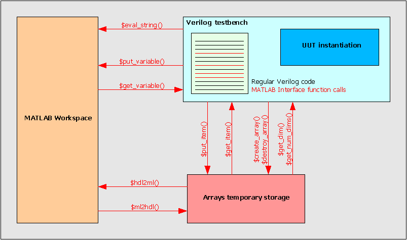
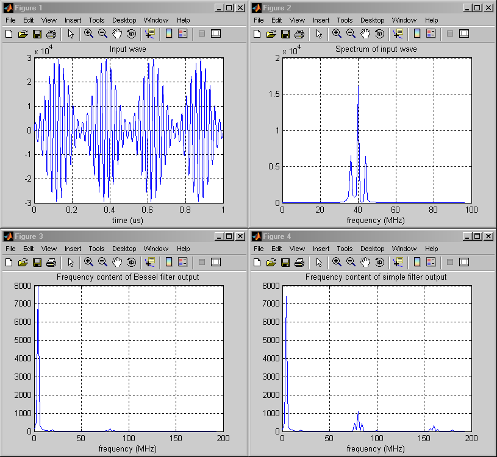
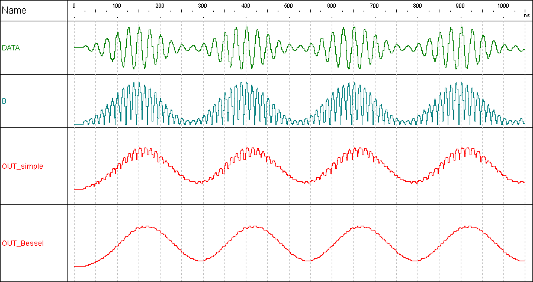

The MATLAB_DEMODULATOR is a simple Verilog example of a digital demodulator using a low pass filter to extract the shape of the modulating signal.
The purpose of this design is to demonstrate the capabilities of the Active-HDL CoSimulation Interface to MATLAB®.
MATLAB® software can be downloaded from the MathWorks website www.mathworks.com.
The design consists of a demodulator design and a testbench. Both are described in VHDL. Block Diagrams are used to connect basic blocks coded in Verilog. The demodulator consists of a block calculating an absolute value of the modulated signal and two types of a low pass filter. A simple averaging filter and a 2-nd order Bessel filter compete against each other. The purpose of the testbench is to analyze the quality of the output signal received from both filters. The testbench uses a set of foreign functions and procedures provided by the Active-HDL Co-simulation Interface to MATLAB. These functions allow to move a part of the testbench to the MATLAB environment and use its analysis and visualization capabilities. The testbench is created as a Block Diagram. This makes it well legible and simplifies design understanding.

Fig. 1. Active-HDL Co-simulation Interface to MATLAB
The Verilog part of the testbench generates control signals for the filter (RESET, CLK, RDY), instantiates the FFT entity, and uses functions responsible for the control over MATLAB and data transfer between Active-HDL and the MATLAB workspace.
The MATLAB part of testbench is divided to four processes. First, the "prepare_wave" initial block configures parameters of generated signal, generates 1024 samples, plots the waveform in the MATLAB graph along with its spectrum, and transfers it to Verilog in order to drive the demodulator input. The second process, "feed_wave" takes subsequent samples and drives the input. The third process "collect_output" gathers the last 512 samples of the output signal. The last process, "analyze_output", transfers collected data to MATLAB, calculates the FFT and the parameters of output signals: the amplitude of the demodulated signal, the carrier to signal power ratio, and the total harmonic distortion. Finally, it draws the spectra of both output signals.
Before the very first use of the interface, type in the following command at the command prompt: "matlab /regserver". The command needs to be entered only once. (You do not need to re-enter it even after a system restart.)
Before co-simulation, all folders containing M-Files and other files referred in MATLAB during co-simulation must be added to MATLAB search path. This step is not necessary as long as the M-Files are located in Active-HDL current folder (pwd) when the co-simulation starts (i.e. when the asim command is invoked). The M-Files for this design are located in the "$dsn/src" directory. As long as the current folder is set to "$dsn/src" (this is the default) you do not have to worry about MATLAB search path.
Additionally, the "$MATLAB\bin\win32" folder (where $MATLAB stands for the MATLAB installation folder) must be added to the system path (%PATH%).
The macro files attached to the design are provided for automation of the co-simulation process. Use the 'compile.do' macro to compile the necessary design files. Use the 'run.do' macro to start the co-simulation. During simulation, the 'MATLAB Command Window' opens and a set of plots visualize the analyzed data.
The connection to MATLAB is established automatically when any of the following tasks is reached in the VHDL code:
In the example, the first executed procedure call is $put_variable().
After you execute the "run.do" macro, connection to MATLAB is established and as the co-simulation advances, a set of plots presented below, displaying input and output signals can be observed.

Fig. 2. Analysis results in MATLAB plots
As a result of co-simulation a report is printed on console:
In Active-HDL you can observe the shapes of output signals so you can examine them visually.

Fig. 3. Analysis results in Active-HDL waveform
You can replace example filters with your own filters and analyze their quality.